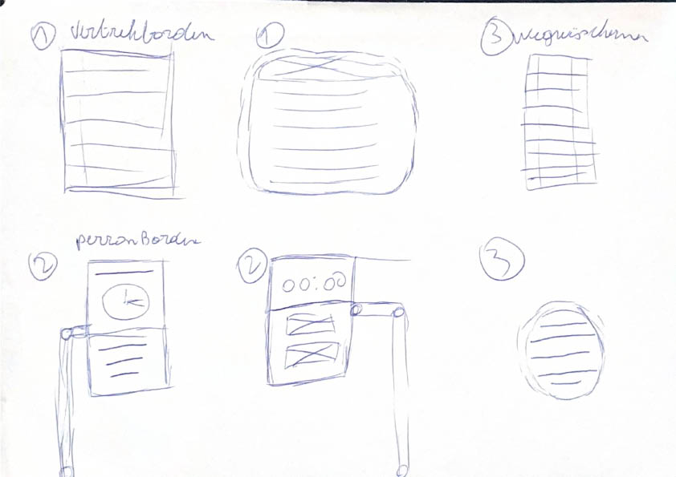
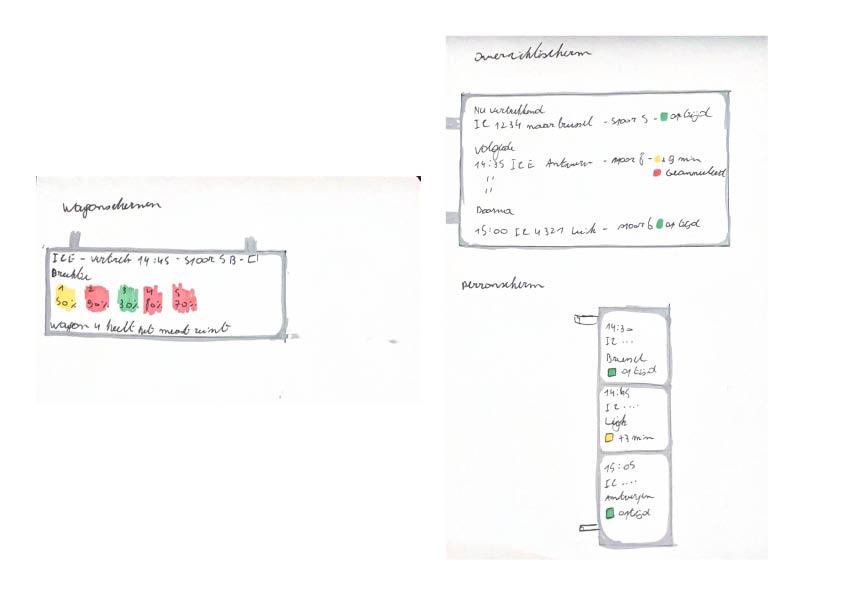

Doel van de week
Het doel van deze week was het verkennen van de structuur en navigatie van de schermen aan de hand van low-fidelity schetsen en wireframes. De focus lag op functionele opbouw, niet op visuele afwerking.
Oefeningen & onderzoek
Low-fidelity uitwerking Voor alle drie de schermtypes werden lo-fi wireframes gemaakt. Deze schetsen tonen enkel de plaatsing van informatie en de onderlinge verhoudingen tussen elementen, zonder kleur, typografie of detailniveau.



Reflectie
De tests bevestigden dat een eenvoudige, consequente structuur goed werkt. Onduidelijke groeperingen en te veel informatie op één niveau zorgden voor verwarring. Deze inzichten vormen de basis voor de volgende iteratie en verdere verfijning van de wireframes.